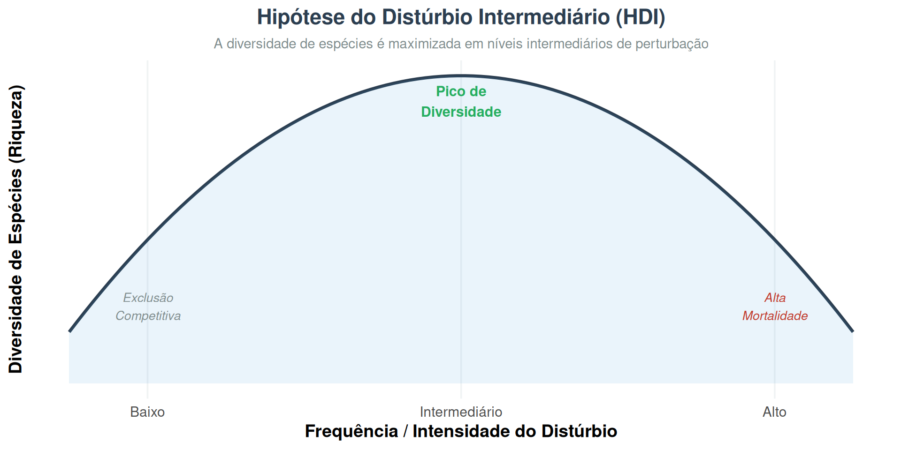
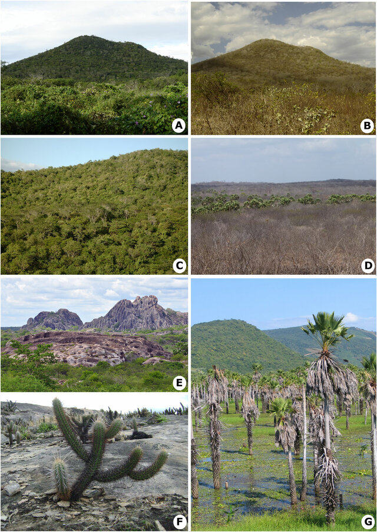
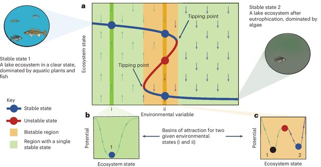

Sucessão Ecológica
Comunidades, Dinâmica e Biomas Brasileiros
Ecologia de Comunidades
2026-06-10
O que é Sucessão Ecológica?
Sucessão ecológica é o processo direcional e contínuo de mudança na composição de espécies e estrutura de uma comunidade ao longo do tempo, em resposta a modificações no ambiente biótico e abiótico.
🌱 Processo
- Colonização → Estabelecimento → Competição → Substituição
- Gradual e previsível (em parte)
- Mudanças em diversidade, biomassa e estrutura
🔑 Por que estudar?
- Restauração ecológica
- Conservação de biomas
- Respostas a distúrbios naturais e antrópicos
- Manejo de paisagens
Módulo 1
Montagem de Comunidades Ecológicas
Gleason vs. Clements
Visão Clementsiana — A Comunidade como Superorganismo
Frederic Clements (1916)
- Comunidades são entidades discretas e integradas, análogas a organismos
- Espécies coexistem porque evoluíram juntas — alta interdependência
- Sucessão é determinística: o clímax é o estado final estável ditado pelo clima
- Comunidades climácicas são repetíveis e previsíveis
O clímax climático da Floresta Amazônica seria o destino inevitável para qualquer área perturbada na região.
📌 Modelo Clementsiano
Perturbação
↓
Espécies pioneiras
↓
Séries de substituição
↓
Clímax climático ← ponto fixo determinado pelo clima regional
Previsível · Determinístico · Holístico
Visão Gleasoniana — O Individualismo das Espécies
Henry Gleason (1926)
- Cada espécie responde individualmente ao ambiente — não em bloco
- Comunidades são encontros fortuitos de espécies com nichos compatíveis
- Sem entidade supraorganísmica; sem clímax único
- A composição local depende de: dispersão, histórico de distúrbios, acaso
Na Caatinga, a composição de espécies varia enormemente entre fragmentos a poucos km de distância — reflexo do individualismo gleasoniano.

Comparativo entre as visões
| Aspecto | Clements | Gleason |
|---|---|---|
| Comunidade | Superorganismo | Assembleia casual |
| Sucessão | Determinística | Estocástica |
| Clímax | Único e fixo | Múltiplos/variável |
| Espécies | Interdependentes | Independentes |
| Previsibilidade | Alta | Baixa |

Síntese Moderna: Filtros de Montagem
A ecologia contemporânea integra ambas as visões através do conceito de filtros de montagem (Assembly Rules):
🌍 Filtro Abiótico
Clima, solo, água, topografia filtram o pool regional de espécies
Ex.: solos hidromórficos do Pantanal excluem espécies não tolerantes a inundação
🐾 Filtro Biótico
Competição, predação, mutualismo e facilitação determinam quem persiste
Ex.: herbivoria de grandes mamíferos no Cerrado molda composição de gramíneas
🎲 Filtro de Dispersão
Limitação de dispersão e acaso histórico completam a montagem
Ex.: rios como barreiras de dispersão na Amazônia — hipótese dos rios
Pool Regional → Filtro Abiótico → Filtro de Dispersão → Filtro Biótico → Comunidade Local
Módulo 2
Estratégias de Regeneração
r vs. K e Triângulo CSR
Estratégias r e K — Teoria da Seleção de História de Vida
MacArthur & Wilson (1967) | Pianka (1970)
Espécies r-estrategistas - Ambientes instáveis/perturbados - Alta taxa de reprodução, baixa longevidade - Pequeno porte, desenvolvimento rápido - Baixa competitividade
Espécies K-estrategistas - Ambientes estáveis/tardios - Baixa fecundidade, alta longevidade - Grande porte, maturação lenta - Alta competitividade por recursos
SUCESSÃO
Pioneiro ───────────────► Clímax
r ←─────────────────────► K
• Embaúba • Castanheira
(Cecropia spp.) (Bertholletia excelsa)
• Vassourinha • Jatobá
(Baccharis spp.) (Hymenaea courbaril)
• Capim-colonião • Angico
(Megathyrsus max.) (Anadenanthera spp.)No Cerrado, Kielmeyera coriacea (pau-santo) é K-estrategista com bulbos subterrâneos que suportam décadas de rebrota pós-fogo.
Triângulo CSR de Grime
J.P. Grime (1977) — três estratégias primárias em função de estresse e distúrbio:
C Competidoras
- Baixo estresse, baixo distúrbio
- Crescimento rápido quando recursos abundam
- Alta aquisição de recursos
- Ex.: Cedrela odorata (cedro) — Floresta Atlântica
S Tolerantes ao Estresse
- Alto estresse, baixo distúrbio
- Crescimento lento, alta conservação de recursos
- Longevidade elevada
- Ex.: Vellozia compacta — campo rupestre
R Ruderais
- Baixo estresse, alto distúrbio
- Ciclo de vida curto, alta reprodução
- Colonização rápida
- Ex.: Solanum mauritianum — clareiras Mata Atlântica
Espécies reais ocupam posições intermediárias no triângulo (CS, SR, CR, CSR) — o modelo é contínuo, não categórico.
CSR em figura

Módulo 3 Sucessão Primária e Secundária
Sucessão Primária — Colonização do Zero
Sucessão primária ocorre em substratos que nunca foram colonizados ou foram totalmente desprovidos de vida e solo — ausência de banco de sementes e de legado biótico.
Etapas clássicas:
- Substrato nu — rocha, lava, dunas recentes
- Liquens e briófitas — intemperismo físico-químico
- Herbáceas pioneiras — acúmulo de matéria orgânica
- Arbustos — sombreamento parcial
- Floresta — fechamento do dossel
Exemplos brasileiros:
🌋 Ilhas vulcânicas — Trindade e Martim Vaz: colonização por Cyperus e fetos pioneiros sobre basalto exposto
🏖️ Dunas costeiras — Lençóis Maranhenses: sequência pioneira com Ipomoea pes-caprae → Sophora tomentosa → arbustos de restinga
🪨 Inselbergs — afloramentos rochosos no Nordeste: criptógamas → Sedum → vegetação rupícola
Sucessão Secundária — Regeneração Após Distúrbio
Sucessão secundária ocorre onde houve uma comunidade prévia — banco de sementes, raízes, matéria orgânica e estrutura de solo permanecem, acelerando o processo.
⚡ Fase Pioneira (0–5 anos)
Herbáceas, cipós e arbustos heliófilos colonizam rapidamente

Ex.: Cecropia, Trema, Piper em clareiras amazônicas
🌿 Fase Inicial (5–20 anos)
Árvores pioneiras formam dossel inicial; sombreamento exclui herbáceas
 {width =70%} Ex.: Schizolobium parahyba (guapuruvu) na Mata Atlântica
{width =70%} Ex.: Schizolobium parahyba (guapuruvu) na Mata Atlântica
🌳 Fase Avançada (20+ anos)
Espécies tolerantes à sombra recrutam sob o dossel; diversidade aumenta
 Ex.: Euterpe oleracea, Eschweilera spp. na Amazônia
Ex.: Euterpe oleracea, Eschweilera spp. na Amazônia
Primária vs. Secundária — Comparação
| Característica | Primária | Secundária |
|---|---|---|
| Substrato | Sem solo/biota | Solo pré-existente |
| Velocidade | Muito lenta | Mais rápida |
| Banco de sementes | Ausente | Presente |
| Facilitação | Essencial | Moderada |
| Fator limitante | Nutrientes, substrato | Luz, competição |
| Duração estimada | Séculos-milênios | Décadas-século |
| Exemplo | Dunas de Lençóis | Pasto abandonado no Cerrado |
📊 Velocidade de Recuperação — Mata Atlântica
Pasto abandonado → floresta secundária:
- 5 anos: dossel de 8–12m com Cecropia
- 15 anos: 50–60% de cobertura de espécies originais
- 30 anos: estrutura florestal presente; diversidade ~40% da primária
- 80–100 anos: difícil distinguir de floresta madura pela estrutura
Porém: espécies raras e lianas tardias levam 200+ anos para retornar.
Módulo 4 - Distúrbio e Sucessão Ecológica
O Conceito de Distúrbio
Distúrbio: evento discreto no tempo que perturba a estrutura de ecossistemas, comunidades ou populações e altera recursos, disponibilidade de substrato ou ambiente físico.
🔥 Intensidade
Grau de destruição da biomassa e estrutura do solo
Baixa: queda de uma árvore
Alta: incêndio de grandes proporções
📅 Frequência
Intervalo entre distúrbios sucessivos
Alta: campos sazonais
Baixa: florestas de terra firme
📐 Extensão
Área afetada pelo evento
Pequena: clareiras
Grande: queimadas de savanas
Hipótese do Distúrbio Intermediário (HDI)
Connell (1978): a diversidade de espécies é maximizada em regimes de distúrbio intermediário — nem muito raros nem muito frequentes.
- Baixo distúrbio: competidores excluem espécies
- Intermediário: diversidade máxima
- Alto distúrbio: só espécies ruderais sobrevivem
Evidências brasileiras:
🌿 Florestas com clareias naturais — Floresta Amazônica mantém alta diversidade beta pelo regime de queda de árvores (0,5–2% da área/ano)
🔥 Cerrado — experimentos em Brasília mostram que fogo a cada 3–5 anos maximiza riqueza de gramíneas e herbáceas; fogo anual ou ausência de fogo reduzem diversidade
🌊 Várzeas — pulso de inundação amazônico como distúrbio intermediário chave para diversidade de peixes e macrófitas
Distúrbios nos Biomas Brasileiros
Distúrbios naturais:
| Bioma | Distúrbio principal | Frequência |
|---|---|---|
| Amazônia | Quedas de árvores, cheias | Contínuo |
| Cerrado | Fogo (relâmpago) | 2–5 anos |
| Pantanal | Inundação sazonal | Anual |
| Caatinga | Seca extrema | Irregular |
| Mata Atlântica | Deslizamentos, ventos | Décadas |
| Campos Sulinos | Geada, granizo | Anual |
⚠️ Distúrbios antrópicos e sucessão
Desmatamento na Amazônia: - Corte seletivo → fragmentação → efeito de borda - Retarda ou impede sucessão secundária por: - Degradação do banco de sementes - Perda de dispersores (aves, morcegos) - Solo compactado por maquinário - “Savanização” com gramíneas exóticas
Consequência: Em áreas com perturbações sucessivas, a floresta secundária não consegue se reestabelecer sem intervenção ativa de restauração.
Ecologia de Clareiras — Distúrbio em Escala Fina
Clareiras (treefall gaps) são a unidade básica de renovação florestal:
- Área: 20–500 m² (típico)
- Frequência: 0,5–2% da área florestal/ano
- Criam mosaico de patches em diferentes estágios

Diferenças por tamanho de clareira:
| Tamanho | Colonizadores | Resultado |
|---|---|---|
| < 50 m² | Sub-bosque | Regeneração local rápida |
| 50–200 m² | Pioneiras mistas | Diversidade intermediária |
| > 200 m² | Heliófitas obrigadas | Alta biomassa pioneira |
Clareiras grandes (> 200 m²) na Floresta Atlântica são colonizadas preferencialmente por Cecropia glaziovii e Piper spp., gerando alta heterogeneidade espacial.
Módulo 5 - Ecologia Funcional e Sucessão
Traços Funcionais e Dinâmica Sucessional
Ecologia funcional estuda como os traços das espécies (morfológicos, fisiológicos, comportamentais) determinam sua resposta ao ambiente e seu efeito sobre processos ecossistêmicos.
🍃 Traços Foliares
- SLA (Área foliar específica)
- LDMC (teor de matéria seca)
- Concentração de N e P
- Espessura da folha
🌲 Traços de Porte
- Altura máxima
- Densidade da madeira
- Diâmetro do tronco
- Espessura da casca
🌰 Traços Reprodutivos
- Massa da semente
- Síndrome de dispersão
- Idade de primeira reprodução
- Fecundidade
Gradientes Funcionais ao Longo da Sucessão
Espécies pioneiras → tardias:
| Traço | Pioneiras | Tardias |
|---|---|---|
| SLA | Alto (folhas finas) | Baixo (esclerófilas) |
| Densidade da madeira | Baixa | Alta |
| Massa da semente | Pequena | Grande |
| Crescimento | Rápido | Lento |
| Tolerância à sombra | Baixa | Alta |
| Dispersão | Anemocoria/zoocoria pequena | Zoocoria grande |
Gradiente exploração → conservação de recursos (Díaz et al. 2016)
O “espectro econômico foliar” organiza espécies em um eixo de aquisição rápida (fast) a conservação (slow) de recursos — padrão universal, incluindo florestas tropicais brasileiras.
Diversidade Funcional e Estabilidade Ecossistêmica
Por que a diversidade funcional importa na sucessão?
- Redundância funcional: múltiplas espécies com mesmo papel → resiliência
- Complementaridade: diferentes nichos = melhor uso dos recursos
- Efeito de amostrador: espécies dominantes determinam função do ecossistema
Durante a sucessão: - Fases iniciais: baixa diversidade funcional (poucas estratégias) - Fases intermediárias: alta diversidade funcional - Fases tardias: diversidade estrutural alta, funcional moderada (convergência)
📌 Caso: Diversidade Funcional no Cerrado
Estudos em áreas com diferentes históricos de fogo no Cerrado de Brasília mostram que:
Cerrado com fogo intermediário tem maior diversidade funcional de gramíneas (traços: altura, SLA, aerênquima)
Cerrado sem fogo tende à dominância de poucas espécies lenhosas C-estrategistas
Fogo frequente seleciona fortemente por traços de rebrota (geófitos, xilopódios)
→ Regime de fogo = filtro funcional de primeira ordem
Facilitação e Inibição na Perspectiva Funcional
✅ Facilitação
Espécies pioneiras melhoram o ambiente para sucessores
Ex.: Leguminosas fixadoras de N₂ (Inga, Mimosa) aumentam fertilidade do solo na Mata Atlântica secundária, acelerando estabelecimento de tardias
🚫 Inibição
Espécies estabelecidas resistem à invasão por sucessores
Ex.: Gramíneas africanas (Urochloa spp.) em áreas de Cerrado degradado inibem regeneração de lenhosas por competição intensa e promoção de fogo
🔄 Tolerância
Sucessores crescem lentamente sob o dossel dos pioneiros até superá-los
Ex.: Palmeiras (Euterpe edulis) germinam no sub-bosque e crescem durante décadas até atingir o dossel na Mata Atlântica
Síntese: Teoria e Padrões de Biomas Brasileiros
Gradientes-chave que modulam a sucessão no Brasil:
| Gradiente | Efeito na sucessão |
|---|---|
| Precipitação | Velocidade e complexidade |
| Sazonalidade | Caducifolia vs. perenifólia |
| Fogo | Fisionomia e traços funcionais |
| Fertilidade do solo | Biomassa e diversidade |
| Altitude | Composição florística |
| Fragmentação | Disponibilidade de propágulos |
Convergências teóricas:
🌿 Gleason vence Clements no detalhe — mas filtros abióticos fortes (seca, fogo, inundação) criam previsibilidade clementsiana em escala regional.
🔄 CSR + r/K são complementares: r/K descreve o eixo ciclo de vida; CSR adiciona o eixo estresse.
🔥 Distúrbio intermediário explica a alta diversidade dos biomas — Cerrado e Amazônia são sistemas mantidos longe do equilíbrio.
Restauração Ecológica como Sucessão Dirigida
🌱 Nucleação
Criar pontos de atração para fauna dispersora (poleiros artificiais, plantio em ilhas)
Acelera colonização natural ao redor do núcleo — eficaz na Mata Atlântica e Cerrado
🌳 Plantio em modelos mistos
Combinar espécies de diferentes grupos funcionais (pioneiras + tardias)
Modelo CERNE/ESALQ: 30% pioneiras + 70% tardias em Mata Atlântica
🔬 Restauração Funcional
Selecionar espécies por traços funcionais para garantir processos ecossistêmicos
Não apenas diversidade de espécies, mas de funções (polinizadores, dispersores, fixadores de N)
Meta do PACTO PELA RESTAURAÇÃO DA MATA ATLÂNTICA e Plano ABC+: restaurar 15 milhões de hectares até 2030 — a maior iniciativa de restauração tropical do mundo.
Desafios Contemporâneos
Mudanças climáticas e sucessão:
- Alteração do regime de chuvas → mudança nas trajetórias sucessionais
- Aumento da frequência de secas extremas na Amazônia (2005, 2010, 2015–16, 2023)
- “Savaneização” da Amazônia: modelo de Lovejoy & Nobre prevê ponto de inflexão entre 20–25% de desmatamento (já próximo em algumas regiões)
Espécies exóticas invasoras: - Urochloa spp. bloqueiam sucessão secundária em 50+ milhões ha no Brasil - Hovenia dulcis (uva-do-japão) invade sucessão tardia no Sul - Pirófitas exóticas alteram regime de fogo no Cerrado
🌡️ Novos estados alternativos estáveis
A teoria dos estados alternativos estáveis é central para entender os biomas brasileiros sob pressão:

Perspectivas e Fronteiras de Pesquisa
🧬 Ecologia Molecular
Metagenômica do solo para rastrear mudanças em comunidades microbianas durante a sucessão
Fungos micorrízicos como indicadores de estágio sucessional
🛰️ Sensoriamento Remoto
Mapeamento de traços funcionais por espectroscopia hiper-espectral (AVIRIS, DESIS)
Monitoramento de sucessão em larga escala pela variação de índices espectrais
🤖 Modelos de Vegetação
Modelos dinâmicos de vegetação global (TRIFFID, JSBACH, ED2) integram traços funcionais para projetar sucessão sob cenários climáticos futuros
Pergunta central: Em um planeta em rápida mudança, a sucessão ecológica ainda converge para clímaxes reconhecíveis — ou os biomas brasileiros entrarão em trajetórias sem análogos históricos?
Conceitos-Chave para Revisão
Glossário essencial:
- Facilitação / Inibição / Tolerância — modelos de substituição de espécies
- Traços funcionais — características que mediam resposta e efeito das espécies
- Pool regional de espécies — conjunto disponível para colonização
- Filtros de montagem — abiótico, biótico, dispersão
- Estados alternativos estáveis — múltiplos equilíbrios possíveis
- Redundância funcional — resiliência via diversidade de funções
- Clímax vs. estado dinâmico — visões antigas vs. modernas
- Distúrbio intermediário — maximização da diversidade
Perguntas reflexivas:
- Por que o modelo de Clements ainda é útil mesmo que “errado”?
- Como a teoria CSR e r/K se complementam?
- O fogo no Cerrado é um distúrbio ou um componente constitutivo?
- Por que a sucessão secundária amazônica pode ser mais lenta que a primária em algumas condições?
- Como traços funcionais podem guiar a seleção de espécies para restauração?
- O que os estados alternativos estáveis implicam para a conservação do Cerrado?
Obrigado!
Sucessão Ecológica nos Biomas Brasileiros
🌿 Montagem de Comunidades
🔄 Estratégias r/K e CSR
🌱 Sucessão Primária e Secundária
🔥 Distúrbio e Diversidade
🧬 Ecologia Funcional
🇧🇷 Amazônia · Cerrado · Mata Atlântica · Caatinga · Pantanal · Pampa